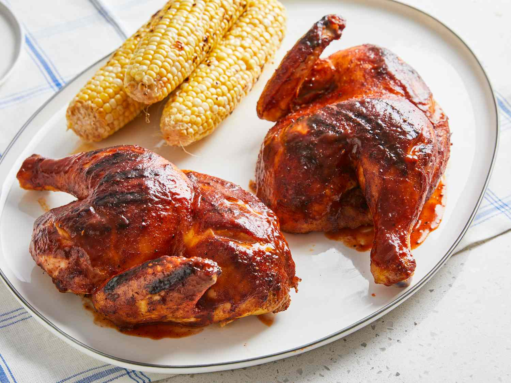

Barbeque Chicken

Description
Barbecue chicken consists of chicken parts or entire chickens that are barbecued, grilled or smoked.
Barbecued chicken is one of the world's most popular barbecue dishes.
Ingredients
- 1 whole chicken, cut into halves
- ¼ cup rice vinegar
- 2 tablespoons barbecue sauce
- 2 cloves garlic, crushed
- 1 tablespoon salt
- 1 teaspoon ground black pepper
Steps to cook
- Step 1:
Cut 1/2-inch deep slashes in the skin-side of each chicken half:
two cuts in each breast, two in each thigh, and one in each leg. Remove wing tips
- Step 2:
Whisk vinegar, 2 tablespoons barbecue sauce, and garlic together in a large bowl.
Place chicken in the bowl and turn to coat. Refrigirate 1 hour
- Step 3:
Preheat an outdoor grill for medium-high heat and lightly oil the grate
- Step 4:
>Remove chicken from the bowl and pat dry with paper towels.
lace chicken halves, skin-side up, on a plate and season with salt, pepper, paprika, onion powder, and cayenne pepper.
- Step 5:
Cook chicken, skin-side down, on the preheated grill until grill marks appear, 3 to 4 minutes.
Turn chicken over, close the grill lid, and cook.